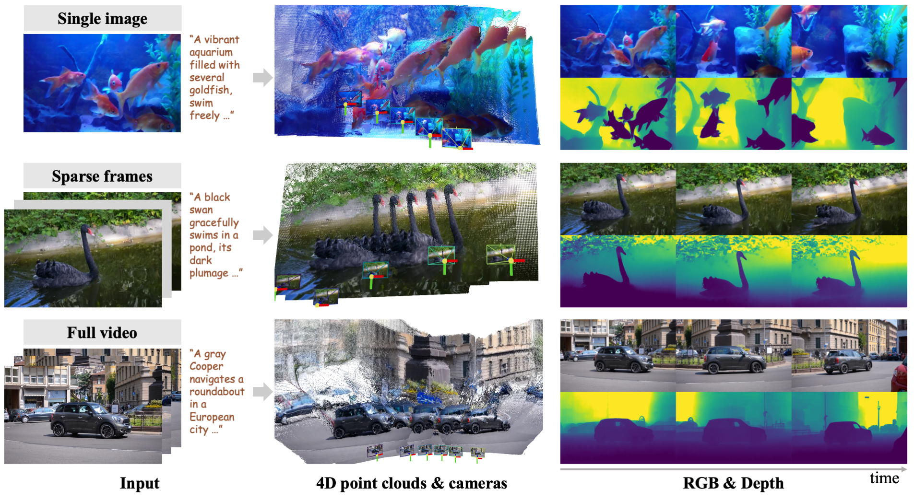
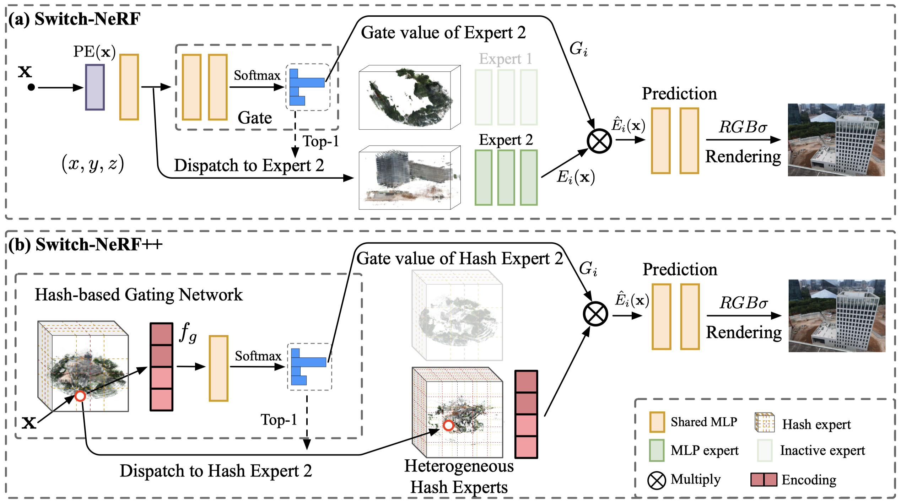
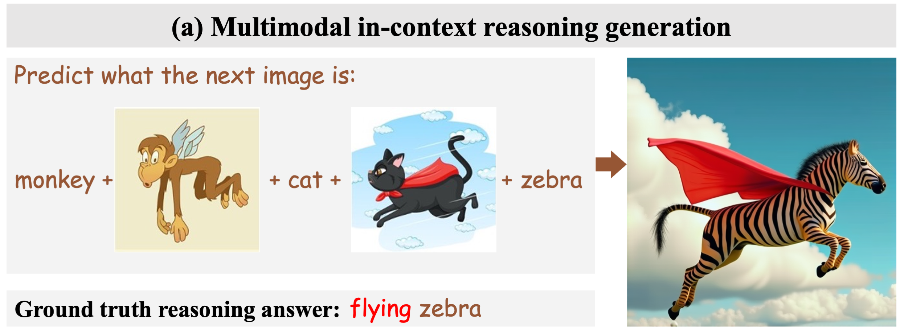
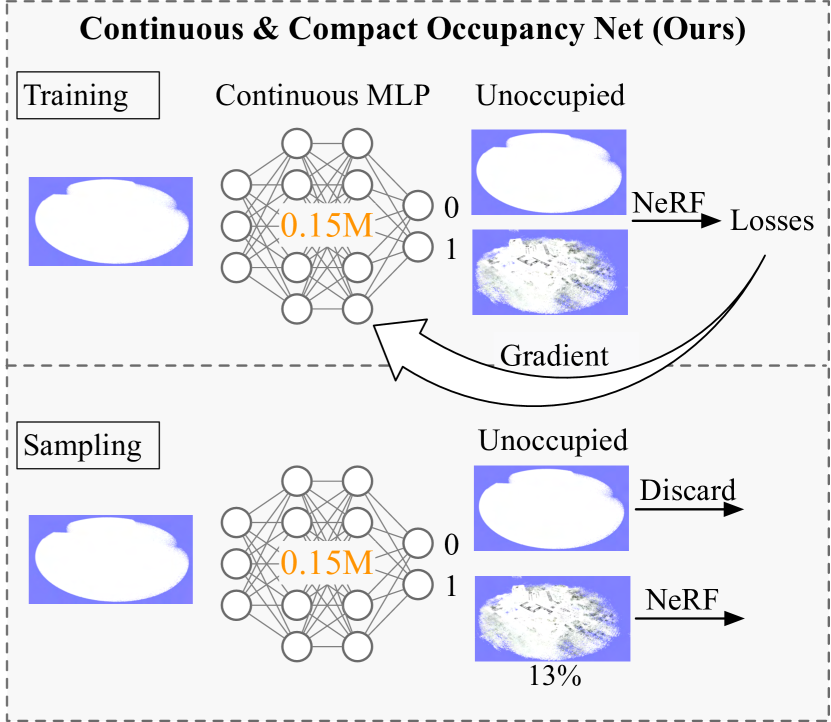
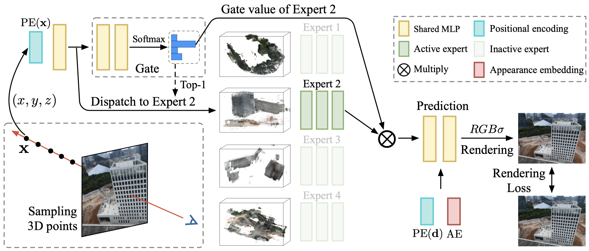
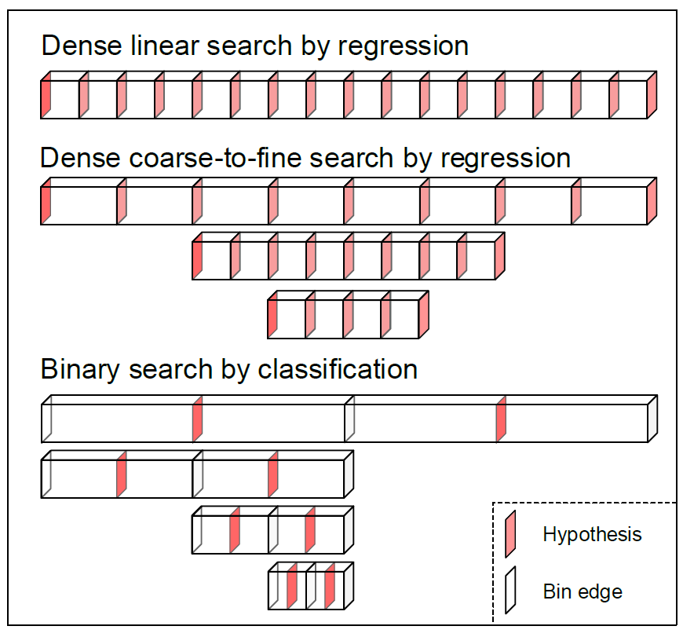
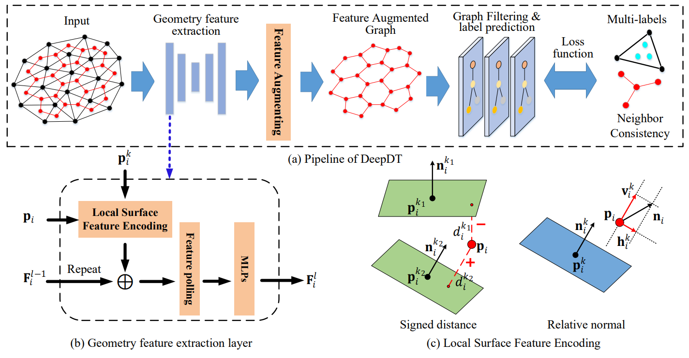

- I am seeking industrial and academic researcher positions in 2025 / 2026, working on multimodal understanding and generation, video diffusion models, and 3D/4D world models. Please feel free to contact me if you are interested in my research.
- May. 02, 2025: ThinkDiff is accepted by ICML 2025. Thanks to Prof. Dan Xu and friends in our Lab and Snap for their great help.
- Feb. 18, 2025: ThinkDiff is posted on arXiv. Thanks to Prof. Dan Xu and friends in our Lab and Snap for their great help.
- Nov. 18, 2024: LeC2O-NeRF posted on arXiv. Thanks to Prof. Dan Xu for his great help.
- Jan. 21, 2023: One paper accepted by ICLR2023. Thanks to Prof. Dan Xu for his great help.
- Aug. 13, 2022: Extension of SSRNet in CVPR2020 is accepted by TVCG.
- Mar. 3, 2022: One paper is accepted by CVPR2022.
- Mar. 3, 2022: New website launches.
|
|

|
One4D: Unified 4D Generation and Reconstruction via Decoupled LoRA Control
Technical report, 2025
project page & demo /
arXiv /
code
|
|

|
Learning Heterogeneous Mixture of Scene Experts for Large-scale Neural Radiance Fields
Zhenxing Mi,
Ping Yin,
Xue Xiao,
Dan Xu
TPAMI, 2025
project page & demo /
arXiv /
code
|
|

|
I Think, Therefore I Diffuse: Enabling Multimodal In-Context Reasoning in Diffusion Models
ICML, 2025
project page & demo /
arXiv /
Huggingface paper /
code
|
|

|
LeC2O-NeRF: Learning Continuous and Compact Large-Scale Occupancy for Urban Scenes
Zhenxing Mi, Dan Xu
arXiv, 2024
arXiv
|
|

|
Switch-NeRF: Learning Scene Decomposition with Mixture of Experts for Large-scale Neural Radiance Fields
Zhenxing Mi, Dan Xu
ICLR, 2023
project page & demo /
openreview /
code
|
|

|
Generalized Binary Search Network for Highly-Efficient Multi-View Stereo
Zhenxing Mi, Di Chang, Dan Xu
CVPR, 2022
project page /
arxiv /
code
|
|

|
DeepDT: Learning Geometry From Delaunay Triangulation for Surface Reconstruction
Yiming Luo*, Zhenxing Mi*, Wenbing Tao
(*Equal contribution)
AAAI, 2021
pdf
|
|
|
SSRNet: Scalable 3D Surface Reconstruction Network
Zhenxing Mi*, Yiming Luo*, Wenbing Tao
(*Equal contribution)
CVPR, 2020
pdf
SSRNet: Scalable 3D Surface Reconstruction Network
Ganzhangqin Yuan*, Qiancheng Fu*, Zhenxing Mi*, Yiming Luo*, Wenbing Tao
(*Equal contribution)
TVCG, 2022
journal
|
- Teaching Assistant, Introduction to Computer Science - Fall 2022/23
- Teaching Assistant, Parallel Programming - Spring 2021/22
- Teaching Assistant, Discrete Mathematical Tools for Computer Science - Fall 2021/22
|
|